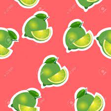

Laboratorio
Inicio
Pagina 1
Pagina 2
Pagina 3
Limones

Caracteristicas de los limones
Verdes
Al igual que las limas crecen en los arboles
Semillas en el interior
Sabor muy amargo
GRACIAS POR PASAR POR LA FRUTERIA CASTILLO